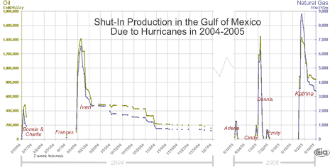

|
As of Friday, September 16, 4:00 pm
Hurricane Katrina in Perspective (see
figures below)
While the peak crude oil production loss from Hurricane Katrina
was similar to Hurricane Ivan last year and even less than Hurricane
Dennis earlier this year, the pace of restoration is expected
to be much more similar to Hurricane Ivan than any of the other
recent hurricanes. For example, while the peak daily loss in
crude oil production during Hurricane Dennis was slightly more
than suffered following Hurricane Katrina, within a week of
the peak loss, crude oil production following Hurricane Dennis
was back to normal while it will likely be months before crude
oil production is back to normal following Hurricane Katrina.

figure
data

figure
data
Shut-in Statistics (as of 11:30 September 16). According
to the Minerals Management Service
(MMS), Gulf of Mexico (GOM) oil production was reduced by 842,091
barrels per day as a result of Hurricane Katrina, equivalent
to 56.06 percent of daily GOM oil production. The MMS also reported
that 3.384 billion cubic feet per day of natural gas production
was shut in, equivalent to 33.84 percent of daily GOM natural
gas production.
Petroleum
Prices. As of the close of trading on Friday, September
16, the gasoline near-month futures price was down by 11.4 cents
per gallon from Thursday, September 15, settling at 178.5 cents
per gallon, while the heating oil near-month futures price was
down 7.7 cents per gallon, settling at 183.5 cents per gallon.
The NYMEX West Texas Intermediate (WTI) crude oil futures price
was down $1.75 per barrel from Thursday, September 15, settling
at $63.00, the lowest settlement price since August 5.
Refineries. Four refineries (ChevronTexaco, located
in Pascagoula, MS; ConocoPhillips, located in Belle Chasse,
LA; ExxonMobil, located in Chalmette, LA; and Murphy Oil, located
in Meraux, LA) remain shut down, and expectations are that these
refineries, which represent about 5 percent of total U.S. refining
capacity, could be shut down for an extended period.
Recent Weekly Releases. On September 12, DOE released
the weekly Gasoline
and Diesel Fuel Update. As of September 11, the average
weekly retail gasoline price decreased to $2.95 (down 11.4 cents
from the previous week). Diesel fuel prices decreased 5.1 cents
to $2.84. As of September 9 (the
most recent data available), the end of the second week
following Hurricane Katrina, U.S. commercial crude oil inventories
(excluding those in the Strategic Petroleum Reserve) fell by
6.6 million barrels from the previous week. U.S. crude oil inventories
remain above the upper end of the average range for this time
of year. Total motor gasoline inventories rose by 1.9 million
barrels last week, putting them at the bottom end of the average
range. Distillate fuel inventories decreased by 1.1 million
barrels last week, and are above the upper end of the average
range for this time of year.
Natural Gas
Prices. The natural gas futures price for October
delivery was down $0.20, to reach $11.14 per million Btu as
of the close of trading Friday, September 16. In trading on
the Intercontinental Exchange, the Henry Hub spot price was
$11.25 per MMBtu, up $0.01 from Thursday, September 15. This
price is $1.45 above the average spot price of $9.80 per MMBtu
for the week ending Friday, August 26, before the storm. At
market locations across the Gulf region, price changes ranged
from a decrease of $0.35 per MMBtu to an increase of $0.30.
The average change was a decrease of $0.08 per MMBtu. The overall
average decrease in price in the Lower 48 States was $0.16 per
MMBtu.
Recent Weekly Release. On September 15, EIA released
the Natural
Gas Weekly Update and reported that natural gas spot prices
increased across much of the Lower 48 States since the prior
Wednesday, September 7. The largest increases tended to cluster
in the Midwest, Northeast, and Midcontinent regions. Working
gas in storage increased to 2,758 Bcf as of Friday, September
9, which is 3.7 percent above the 5-year average inventory level
for the report week. The implied net injection of 89 Bcf is
3 percent above the 5-year average of 86 Bcf.
Processing. Discovery Gas, a pipeline company, has announced
plans to reverse flow to offer processing services to customers
that have been affected by the damage to the Venice and Yscloskey
processing plants, which may be out of service for several months.
The Discovery Gas system has a gas processing plant at Larose,
Louisiana, with a capacity of up to 800 million cubic feet a
day (MMcf/d). Onshore processing services are specifically targeted
for Tennessee Gas Pipeline and Columbia Gulf for gas flow into
the Northeast. The offer could impact flow into Tennessee and
Columbia beginning Friday, September 15. According to Discovery,
customers affected by the damage to ExxonMobil's Grand Isle,
Louisiana, plant could also use the processing services at Larose.
Discovery Gas is offering pipeline capacity for producers with
gas stranded from the hurricane. The pipeline was flowing 280
MMcf/d on Thursday, which is 80 percent of its pre-Katrina volumes.
|


{kind=link}
{kind=link}